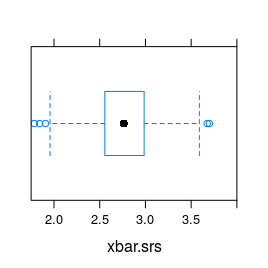
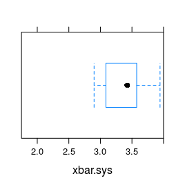
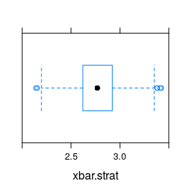
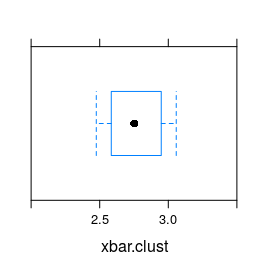

Recall from Chapter 3 that most research questions actually break down into 2 parts:
Descriptive Statistics: What relationship can we observe between the variables, in the sample?
Inferential Statistics: Supposing we see a relationship in the sample data, how much evidence is provided for a relationship in the population? Does the data provide lots of evidence for a relationship in the population, or could the relationship we see in the sample be due just to chance variation in the sampling process that gave us the data?
Both parts of answering research questions involve dealing with the sample. In order to make valid conclusions about any research question, we first need to make sure we are dealing with a good sample. This chapter will discuss various techniques for drawing samples, the strengths and weaknesses of these sampling techniques, and the uses and abuses of statistics.
In the past few of chapters, we have looked at both parts of research questions. An important distinction that we want to make sure has been made before we go any further is the distinction between a sample and a population.
A population is the set of all subjects of interest.
A sample is the subset of the population for which we have data.
Let’s consider these two definitions with a research question.
Research Question: In the United States, what is the mean height of adult males (18 years +)?
The population that we are dealing with in this case is all U.S. adult males. One way to find an exact answer to this research question would be to survey the entire population. However, this is nearly impossible! It would be much quicker and easier to measure only a subset of the population, a sample.
However, if we want our sample to be an accurate reflection of the population, we can’t just choose any sample that we wish. The way in which we collect our sample is very important and will be a topic of conversation in this chapter.
For the time being, let’s suppose that we were able to choose an appropriate sample (and we’ll talk more about how this is done later). Suppose that our sample of U.S. men is an accurate representation of the U.S. population of men. Then, we might discuss two different means: the mean height of the sample and the mean height of the population. These are both descriptions, as opposed to inferences. There are a couple of differences, however.
Mean Height of the Sample
Mean Height of the Population
Our goal is to use the information we’ve gathered from the sample to infer, or predict, something about the population. For our example, we want to predict the population mean, using our knowledge of the sample. The accuracy of our sample mean relies heavily upon how well our sample represents the population at large. If our sample does a poor job at representing the population, then any inferences that we make about the population are also going to be poor. Thus, it is very important to select a good sample!
Note: If we already knew everything about a population, it would be useless to gather a sample in order to infer something about the population. We would already have this information! Using statistics as an inferential tool means that you don’t have information about the entire population to start with. If you are able to sample the entire population, this would be called a census.
It would be nice to see what a sample looks like in comparison to the population from which it is drawn. In tigerstats we have a dataset that represents an imaginary population, imagpop. Drawing samples from this “population” will help give an idea of the distinction between sample versus population and statistic versus parameter. Try out the following app, keeping in mind that information about the sample is displayed in light blue and information about the population is displayed in red.
require(manipulate)
SimpleRandom()There are 2 main kinds of sampling:
Random Sampling
Non-Random Sampling
There are advantages and disadvantages of both.
There are four different methods of random sampling that we will discuss in this chapter:
The simple random sample (SRS) is the type of sample that we will focus most of our attention on in this class. However, the other types have been included in the text to give you comparisons to the SRS and also to aid you in the future.
It will be helpful to work with an example as we describe each of these methods, so let’s use the following set of 28 students from FakeSchool as our population from which we will sample.
data(FakeSchool)
View(FakeSchool)
help(FakeSchool)Keep in mind that we would not know information about an entire population in real life! We are using this “population” for demonstration purposes only!
Our goal is to describe how these different sampling techniques are implemented, the strengths and weaknesses of them, and to form a comparison between the techniques. We will try to answer the following question:
Which random sampling method (simple random sample, systematic sample, stratified sample, or cluster sample) is the most appropriate for estimating the mean grade point average (GPA) for the students at FakeSchool?
We can easily compute the true mean GPA for the students at FakeSchool by averaging the values in the fourth column of the dataset. This will be the population mean. We will call it \(\mu\) (“mu”).
mu <- mean(~GPA,data=FakeSchool)
mu## [1] 2.766429Again, the population parameter, \(\mu\), is not typically known. If it were known, there would be no reason to estimate it! However, the point of this example is to practice selecting different types of samples and to compare the performance of these different sampling techniques.
We often use the acronym SRS as an abbreviation for “simple random sampling”.
Intuitively, let’s think of simple random sampling as follows: we find a big box, and for each member of the population we put into the box a ticket that has the name of the individual written on it. All tickets are the same size and shape. Mix up the tickets thoroughly in the box. Then pull out a ticket at random, set it aside, pull out another ticket, set it aside, and so on until the desired number of tickets have been selected.
Let’s select a simple random sample of 7 elements without replacement. We can accomplish this easily with the built in function popsamp in R. This function requires two pieces of information:
Remember that sampling without replacement means that once we draw an element from the population, we do not put it back so that it can be drawn again. We would not want to draw with replacement as this could possibly result with a sample containing the same person more than once. This would not be a good representation of the entire school. (By default, the popsamp function always samples without replacement. If you want to sample with replacement, you would need to add a third argument to the function: replace=TRUE. Typically, we will sample without replacement in this class.)
Since we may want to access this sample later, it’s a good idea to store our sample in an object.
set.seed(314159)
srs <- popsamp(7,FakeSchool)
srs## Students Sex class GPA Honors
## 6 Eva F Fr 1.80 No
## 18 Derek M Jr 3.10 Yes
## 7 Georg M Fr 1.40 No
## 11 Dylan M So 3.50 Yes
## 23 Bob M Sr 3.80 Yes
## 13 Eric M So 2.10 No
## 14 Gabriel M So 1.98 NoLet’s calculate the mean GPA for the 7 sampled students. This will be the sample mean, \(\bar{x}_{srs}\). We will use the subscript ‘srs’ to remind ourselves that this is the sample mean for the simple random sample.
xbar.srs <- mean(~GPA,data=srs)
xbar.srs## [1] 2.525714Strengths
The selection of one element does not affect the selection of others.
Each possible sample, of a given size, has an equal chance of being selected.
Simple random samples tend to be good representations of the population.
Requires little knowledge of the population.
Weaknesses
If there are small subgroups within the population, a SRS may not give an accurate representation of that subgroup. In fact, it may not include it at all! This is especially true if the sample size is small.
If the population is large and widely dispersed, it can be costly (both in time and money) to collect the data.
To illustrate the idea, let’s take a 1-in-4 systematic sample from our FakeSchool population.
We will start by randomly selecting our starting element.
set.seed(49464)
start=sample(1:4,1)
start## [1] 4So, we will start with element 4, which is Daisy and choose every 4th element after that for our sample.
## Students Sex class GPA Honors
## 4 Daisy F Fr 2.1 No
## 8 Andrea F So 4.0 Yes
## 12 Felipe M So 3.0 No
## 16 Brittany F Jr 3.9 No
## 20 Eliott M Jr 1.9 No
## 24 Carl M Sr 3.1 No
## 28 Grace F Sr 1.4 NoThe mean GPA of the systematic sample, the sample mean, \(\bar{x}_{sys}\), is 2.7714286.
Strengths
Assures an even, random sampling of the population.
When the population is an ordered list, a systematic sample gives a better representation of the population than a SRS.
Can be used in situations where a SRS is difficult or impossible. It is especially useful when the population that you are studying is arranged in time.
For example, suppose you are interested in the average amount of money that people spend at the grocery store on a Wednesday evening. A systematic sample could be used by selecting every 10th person that walks into the store.
Weaknesses
Not every combination has an equal chance of being selected. Many combinations will never be selected using a systematic sample!
Beware of periodicity in the population! If, after ordering, the selections match some pattern in the list (skip interval), the sample may not be representative of the population.
The list of the FakeSchool students is ordered according to the student’s year in school (freshmen, sophomore, junior, senior). Taking a systematic sample ensures that we have a person from each class represented in our sample. However, there is an underlying pattern, or periodicity, in the data. The students are also listed according to their GPA. For instance, Alice is ranked first in the freshmen class and George is ranked last in the freshmen class.
Consider what would have happened if we had used a systematic sample of 4 students to estimate the average GPA of the students at the school.
## Students Sex class GPA Honors
## 1 Alice F Fr 3.80 Yes
## 8 Andrea F So 4.00 Yes
## 15 Adam M Jr 3.98 Yes
## 22 Angela F Sr 4.00 YesNotice that even thought the systematic sample ensured that we got one person from each class, we also ended up getting students of the same class rank due to the underlying pattern. Our estimate for the average GPA is not going to truly reflect the population of the school! It may be biased since the GPA pattern coincided with the skip interval.
Let’s take a stratified sample of 7 elements from FakeSchool using the following strata: Honors, Not Honors. First, let’s determine how many elements belong to each strata:
## Honors
## No Yes
## 16 12So there are 12 Honors students at FakeSchool and 16 non-Honors students at FakeSchool.
There are various ways to determine how many students to include from each stratum. For example, you could choose to select the same number of students from each stratum. Another strategy is to use a proportionate stratified sample. In a proportionate stratified sample, the number of students selected from each stratum is proportional to the representation of the strata in the population. For example, \(\frac{12}{28}\) X 100% = 42.8571429% of the population are Honors students. This means that there should be 0.4285714 X 7 = 3 Honors students in the sample. So there should be 7-3=4 non-Honors students in the sample.
Let’s go through the coding to draw these samples. Check out the how we use the subset function to pull out the Honors students from the rest of the populations:
set.seed(1837)
honors=subset(FakeSchool,Honors=="Yes")
honors## Students Sex class GPA Honors
## 1 Alice F Fr 3.80 Yes
## 2 Brad M Fr 2.60 Yes
## 8 Andrea F So 4.00 Yes
## 9 Betsy F So 4.00 Yes
## 10 Chris M So 4.00 Yes
## 11 Dylan M So 3.50 Yes
## 15 Adam M Jr 3.98 Yes
## 17 Cassie F Jr 3.75 Yes
## 18 Derek M Jr 3.10 Yes
## 19 Faith F Jr 2.50 Yes
## 22 Angela F Sr 4.00 Yes
## 23 Bob M Sr 3.80 YesNext, we take a SRS of size 3 from the Honors students:
honors.samp=popsamp(3,honors)
honors.samp## Students Sex class GPA Honors
## 9 Betsy F So 4.0 Yes
## 11 Dylan M So 3.5 Yes
## 8 Andrea F So 4.0 YesThe same method will work for non-Honors students.
set.seed(17365)
nonhonors=subset(FakeSchool,Honors=="No")
nonhonors.samp=popsamp(4,nonhonors)
nonhonors.samp## Students Sex class GPA Honors
## 25 Diana F Sr 2.90 No
## 13 Eric M So 2.10 No
## 14 Gabriel M So 1.98 No
## 28 Grace F Sr 1.40 NoWe can put this together to create our stratified sample.
## Students Sex class GPA Honors
## 9 Betsy F So 4.00 Yes
## 11 Dylan M So 3.50 Yes
## 8 Andrea F So 4.00 Yes
## 25 Diana F Sr 2.90 No
## 13 Eric M So 2.10 No
## 14 Gabriel M So 1.98 No
## 28 Grace F Sr 1.40 NoThe sample mean for the stratified sample, \(\bar{x}_{strat}\), is 2.84.
Strengths
Representative of the population, because elements from all strata are included in the sample.
Ensures that specific groups are represented, sometimes even proportionally, in the sample.
Since each stratified sample will be distributed similarly, the amount of variability between samples is decreased.
Allows comparisons to be made between strata, if necessary. For example, a stratified sample allows you to easily compare the mean GPA of Honors students to the mean GPA of non-Honors students.
Weaknesses
Note: There are a couple of differences between stratified and cluster sampling.
In a stratified sample, the differences between stratum are high while the differences within strata are low. In a cluster sample, the differences between clusters are low while the differences within clusters are high.
In a stratified sample, a simple random sample is chosen from each stratum. So, all of the stratum are represented, but not all of the elements in each stratum are in the sample . In a cluster sample, a simple random sample of clusters is chosen. So, not all of the clusters are represented, but all elements from the chosen clusters are in the sample.
Let’s take a cluster sample using the grade level (freshmen, sophomore, junior, senior) of FakeSchool as the clusters. Let’s take a random sample of 2 of them.
## Students Sex class GPA Honors
## 15 Adam M Jr 3.98 Yes
## 16 Brittany F Jr 3.90 No
## 17 Cassie F Jr 3.75 Yes
## 18 Derek M Jr 3.10 Yes
## 19 Faith F Jr 2.50 Yes
## 20 Eliott M Jr 1.90 No
## 21 Garth M Jr 1.10 No
## 22 Angela F Sr 4.00 Yes
## 23 Bob M Sr 3.80 Yes
## 24 Carl M Sr 3.10 No
## 25 Diana F Sr 2.90 No
## 26 Frank M Sr 2.00 No
## 27 Ed M Sr 1.50 No
## 28 Grace F Sr 1.40 NoThe sample mean for the clustered sample, \(\bar{x}_{clust}\), is 2.7807143.
Strengths
Weaknesses
Now that you have an idea about how to take each of these kinds of samples, let’s compare them by doing repeated samples. There is no general rule for determining which sampling method is best. The choice of sampling method depends on the data that is being analyzed and will require the statistician’s judgment.
We will compare the simple random sample and the systematic sample by determining which sample produces the least variable mean GPA estimate after repeated sampling.
Putting that another way: Let’s start by taking 1000 simple random samples and 1000 systematic samples. We will compute \(\bar{x}_{srs}\) and \(\bar{x}_{sys}\) for each of the samples. Then, these sample means will be compared using some graphical and numerical summaries (specifically standard deviation) that you learned about in Chapter 2.
We’re going to take the SRS’s and systematic samples just like did before. The only difference is that now we’ll be taking 1000 of them instead of just 1. Since we only care about the sample mean for each sample, we’ll create a boxplot of the \(\bar{x}_{srs}\)’s and a boxplot of the \(\bar{x}_{sys}\)’s. These two boxplots allow us to compare the amount of variation, or spread, in the estimates for the mean GPA generated from the two different sampling methods (SRS and systematic sampling). See Figure[Boxplots].
 
To support this visualization of the variability of the mean estimate for GPA, let’s also look at favstats. For the 1000 simple random samples, the numerical summaries of the sample means is:
## min Q1 median Q3 max mean sd n missing
## 1.785714 2.556429 2.765 2.985714 3.7 2.768701 0.3173966 1000 0For the 1000 systematic samples, the numerical summaries of the sample means is:
## min Q1 median Q3 max mean sd n missing
## 2.9 3.18125 3.425 3.575 3.945 3.42042 0.381641 1000 0Recall that the true average GPA for the population of students at FakeSchool was 2.7664286. Notice that the average value for the sample means from the 1000 simple random samples is 2.7687014. This is pretty close to the population parameter. (We will talk about what “pretty close” means in later chapters.) Compare this to the average value for the sample means from the 1000 systematic samples: 3.42042. On average, the SRS does a better job of producing an estimate for the mean GPA than the systematic sample.
Additionally, there is less variability in the 1000 \(\bar{x}_{srm}\)’s (0.3173966) than in the 1000 \(\bar{x}_{sys}\)’s (0.381641).
If we could only pick one of these types of samples to estimate the mean GPA, it appears the a SRS is a better choice than a systematic sample.
Let’s do a similar analysis to compare the two sampling methods, stratified sampling or cluster sampling. We will compare the stratified sample and the cluster sample by determining which sample produces the least variable mean GPA estimate after repeated sampling.
 
To support this visualization of the variability of the mean estimate for GPA, let’s also look at favstats. For the 1000 stratified samples, the numerical summaries of the sample means is:
## min Q1 median Q3 max mean sd n missing
## 2.14 2.620714 2.768571 2.921429 3.422857 2.772663 0.2215186 1000 0For the 1000 cluster samples, the numerical summaries of the sample means is:
## min Q1 median Q3 max mean sd n missing
## 2.475 2.584286 2.752143 2.948571 3.057857 2.762486 0.1965341 1000 0Both of these sampling methods produce an average of the sample means that is pretty close to the true mean GPA for the population. However, the sample means from the clustered samples have less variability. (This can be seen by comparing the standard deviations.) In other words, the 1000 cluster samples are closer, on average, to the true mean than the 1000 stratified samples.
If we could only pick one of these types of samples to estimate the mean GPA, it appears the cluster sample is a better choice than a stratified sample.
You can think of a survey as occurring in three stages:
At each of these stages, some bias can creep in!
Selection bias is the type of bias that can occur in the first stage, in which you are selecting the subjects who will be your sample.
One sampling method that can result in selection bias is convenience sampling.
Example: A math professor wants to know what percentage of young adults, ages 18-22, consider education a top priority. She gathers a sample by surveying all of her advisees.
This method of sampling is quick and easy. However, only including students that are enrolled in college leaves out a large part of the population - those young adults that did not go to college or enrolled in a different type of higher education. Only including college students in this study might make it appear that a high percentage of young adults consider education a top priority. The subjects in the study surely consider it a priority since they are seeking a college degree.
Another form of selection bias occurs when you attempt to sample everyone in the population, but you leave it up to each member of the population to find out about your survey and to take part in it. This is called “volunteer” sampling.
Example: A radio station wishes to examine the proportion of its listeners which candidate they voted for in the last presidential election. They conduct a poll by asking listeners to call the station.
Conducting a survey in this manner is also quick and easy, but there are groups in the population that are underrepresented or not represented at all! Only those listeners who want to disclose this information will be part of the survey. Those volunteers may have something else in common that will bias the results: for example, they may have stronger opinions on the question at hand than do other folks who did not choose to go out of their way to phone in their thoughts.
One great advantage of the simple random sampling and proportionate stratified sampling – two of the methods we discussed earlier – is that they are not subject to selection bias.
Even if you succeed in selecting a sample of subjects in an unbiased way, you still face the task of acquiring their consent to be in your survey. Some people may refuse to take part, or perhaps you will be unable to contact them all. In that event, they won’t respond to the survey, and this could lead to bias.
Example: The faculty at Georgetown College wanted to know what proportion of students thought that Foundations should be required for all freshmen. A simple random sample of 200 students was selected from a list obtained from the registrar. A survey form was sent by email to those students. After analyzing the results from the 20 people that reply, the faculty report that 90% of the students oppose the requirement for Foundations.
Answer: The population of interest is the entire student body at Georgetown College.
Answer: The intended sample size was 200.
Answer: The sample size that was actually observed was the number of students that responded to the survey, 20.
Answer: Since 20 of the 200 students selected for the survey actually respond, 180 did not respond. The percentage of nonresponse was 90%. It can be found by:
(180/200)*100 ## [1] 90Answer: If all of the 200 randomly selected students had responded to the survey, we would have had a true SRS. However, nonresponse bias has occurred in this study because 90% of the sampled subjects either were not reached, refused to participate, or failed to answer the question. A couple of possible explanations for the nonresponding students might be that they do not check their email or they simply did not have a strong enough opinion on the topic to feel the need to take the time to respond. (There may be other legitimate reasons.) So, it could be that the students that responded had very strong feelings about the Foundations requirement. If these are the only answers that are acquired, the results may be heavily biased in the direction of the opinion of the respondents. However, this does not mean that all students feel this way.
The wording and presentation of the questions can significantly influence the results of a survey. The main type of bias that can result from a poorly-worded survey is response bias.
Many things can subject a survey response bias. Here are a few:
Deliberate Response Bias - If a survey is being conducted to support a certain cause, questions are sometimes deliberately worded in a biased manner. The wording of a question should not indicate a desired answer.
Example: Consider the following research question: “Seeing as Dr. Robinson and Dr. White are the greatest professors you have ever had, is it worth even offering the peer tutoring sessions for MAT111?”
This question is prefaced in a way that encourages a desired response from the subjects in the study.
Unintentional Response Bias - Some questions are worded in such a way that the meaning is misinterpreted by the respondents.
Example: Consider the following research question: “Do you use drugs?” The word drugs can cause unintentional confusion for the respondent. The intended definition of drugs is not made clear in the wording of the question. Does the researcher mean illegal drugs, prescription drugs, over the counter drugs, or possibly even caffeine?
Desire of Respondents to Please - People may respond differently depending on how they are being asked - face-to-face, over the telephone, on paper, on the internet.
For example, a person may tend to be more honest when answering questions on paper or over the internet. When speaking directly to the researcher, the respondent may feel the need to answer the question how they perceive the researcher wants.
Asking the Uninformed - If a question is about a topic that the respondent does not know anything about, they often do not like to admit it. Respondents may tend to give an answer, even though they do not understand the question.
Unnecessary complexity - Questions should be kept simple. Try to only ask one question at a time.
Example: Consider the following survey question: “Most semesters are 15 weeks long; while most quarters are 10 weeks long. Most schools on a quarter system get 2 days for Thanksgiving, one for Veteran’s Day, and one for Columbus Day. Most semester schools get Labor Day off and some take more than 2 days at Thanksgiving. However, semester schools typically start several weeks earlier in the fall and generally attend school farther into December. Considering the above, which system would you prefer?”
This question has too much information in it. By the time you get done reading it, you may have forgotten what the question is even referring to. It is unnecessarily complex!
Ordering of Questions - If one question requires respondents to think about something that they may not have otherwise considered, then the order in which questions are presented can change the results.
Example: Suppose a researcher wants to know how many hours a day people spend on the Internet. Consider the following sequence of questions:
Placing the question about the smartphone before the question about time spent on the Internet causes the respondent to take into consideration that they are often on the Internet when they are using their phone. Putting the questions in this order may change the answers received for the second question.
Confidentiality Concerns - Some personal questions will be answered differently depending on how confident the respondent is that their identity will be concealed.
Know how to use this function:
popsamp